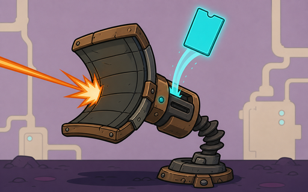
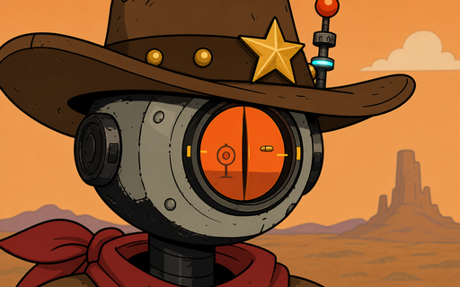
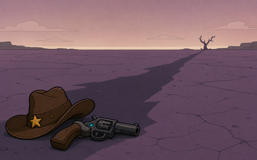
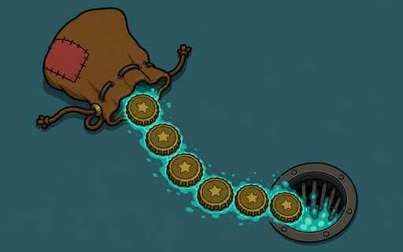
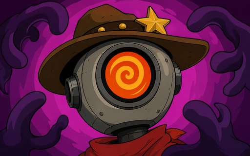
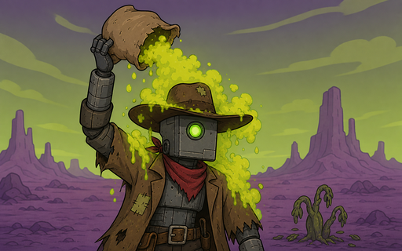
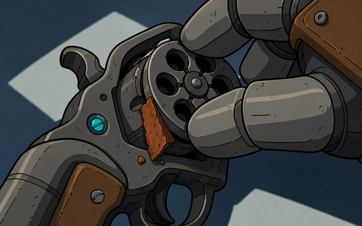

Cards · 卡牌
Attacks 攻击 (13)

Whirling Sawblades 回旋锯刃
- Deal 2 fixed damage to ALL enemies
- Apply 5 Short Circuit to ALL
- Deal 3 fixed damage to ALL enemies
- Apply 7 Short Circuit to ALL

Voltage Tear 高压撕裂
- Apply 10 Short Circuit (+INT) — x2 if target already has Short Circuit
- Apply 13 Short Circuit (+INT) — x2 if target already has Short Circuit

Final Salvo 终结齐射
- Deal 5+1×attacks this turn
- Deal 7+1×attacks this turn

Quickdraw 快枪
- Deal 4 damage (+STR)
- Draw 1 card(s)
- Deal 6 damage (+STR)
- Draw 2 card(s)

Charged Shot 蓄能射击
- Deal 6 + STR×2 damage
- Exhaust (removed for combat)
- Deal 8 + STR×3 damage
- Exhaust (removed for combat)

Piston Jab 活塞拳
- Deal 4 fixed damage
- Deal 6 fixed damage

Kinetic Rebound 动能回击
- Gain 6 Block (+CON)
- Deal damage = Block×1
- Gain 8 Block (+CON)
- Deal damage = Block×1

Short-Circuit Round 短路弹
- Deal 3 damage (+STR)
- Apply 6 Short Circuit (+INT)
- Deal 4 damage (+STR)
- Apply 8 Short Circuit (+INT)

Scrap Counter 废料反击
- Deal 3 damage (+STR)
- Gain 3 Block (+CON)
- Deal 5 damage (+STR)
- Gain 6 Block (+CON)

Shoot 射击
- Deal 3 damage (+STR)
- Deal 5 damage (+STR)

Stun Baton 电击棍
- Deal 1 damage (+STR)
- Apply 1 Stun
- Deal 3 damage (+STR)
- Apply 1 Stun

Sweep Arc 横扫弧
- Deal 8 fixed damage to ALL enemies
- Deal 10 fixed damage to ALL enemies

Weakening Shot 虚弱射击
- Deal 4 damage (+STR)
- Apply 1 Weak to target
- Deal 6 damage (+STR)
- Apply 2 Weak to target
Skills 技能 (21)

Afterburner 加力燃烧
- Gain 2 Energy
- Draw 1 card(s)
- Exhaust (removed for combat)
- Gain 2 Energy
- Draw 2 card(s)
- Exhaust (removed for combat)

Arc Flash 电弧闪
- Deal 2 fixed damage to ALL enemies
- Overload ALL enemies
- Deal 4 fixed damage to ALL enemies
- Overload ALL enemies

Brace 支撑
- Gain 3 Block (+CON)
- Gain 6 Block (+CON)

Brace Protocol 支撑协议
- Gain 10 Block (+CON)
- Gain 13 Block (+CON)

Charge Sink 电荷回收
- Overload ALL enemies; gain Block equal to damage dealt
- Overload ALL enemies; gain Block equal to damage dealt

Corrode 腐蚀
- Apply 2 Vulnerable to target
- Apply 3 Vulnerable to target

Memory Dump 内存倾泻
- Draw 3 card(s)
- Exhaust (removed for combat)
- Draw 4 card(s)
- Exhaust (removed for combat)

Defend 防御
- Gain 5 Block (+CON)
- Gain 8 Block (+CON)

Deflector 偏导力场
- Gain 5 Block (+CON)
- Apply 1 Weak to target
- Gain 8 Block (+CON)
- Apply 2 Weak to target

Circuit Diagnosis 线路诊断
- Apply 8 Short Circuit (+2×INT)
- Apply 10 Short Circuit (+3×INT)

Hot Swap 热插拔
- Draw 2 card(s)
- Draw 3 card(s)

Kinetic Baffle 动能偏流板
- Gain 5 Block (+CON)
- Draw 1 card(s)
- Gain 7 Block (+CON)
- Draw 1 card(s)

Overload 过载
- Overload ALL enemies; ×2 damage
- Exhaust (removed for combat)
- Overload ALL enemies; ×2 damage
- Exhaust (removed for combat)

Load Up 备弹
- Add 2x 'reload' to hand
- Add 3x 'reload' to hand

Deadeye 鹰眼
- Gain 1 Luck
- Gain 1 Deadeye
- Gain 2 Luck
- Gain 1 Deadeye

Purge 净化
- Apply 1 Vulnerable to target
- Apply 1 Weak to target
- Apply 2 Vulnerable to target
- Apply 2 Weak to target

Reload 装弹
- Gain 2 Loaded
- Draw 1 card(s)
- Restore attack allowance
- Exhaust (removed for combat)
- Gain 3 Loaded
- Draw 1 card(s)
- Restore attack allowance
- Exhaust (removed for combat)

Smoke Step 烟遁
- Gain 1 Dodge
- Exhaust (removed for combat)
- Gain 1 Dodge
- Exhaust (removed for combat)

Spiked Guard 尖刺护盾
- Gain 5 Block (+CON)
- Gain 2 Thorns
- Gain 8 Block (+CON)
- Gain 2 Thorns

Static Shout 静电怒吼
- Apply 1 Weak to ALL
- Exhaust (removed for combat)
- Apply 2 Weak to ALL
- Exhaust (removed for combat)

Quick Patch 快速修补
- Gain 4 Block (+CON)
- Exhaust (removed for combat)
- Gain 7 Block (+CON)
- Exhaust (removed for combat)
Abilities 能力 (6)

All In 梭哈
- Gain 1 All In
- Gain 1 All In

Covering Reload 换弹掩护
- Gain 1 Covering Reload
- Gain 1 Covering Reload
- Gain 6 Block (+CON)

Focus 专注
- Gain 1 Intelligence
- Draw 1 card(s)
- Exhaust (removed for combat)
- Gain 2 Intelligence
- Draw 2 card(s)
- Exhaust (removed for combat)

Critical Discharge 暴击放电
- Gain 1 Overload Protocol
- Gain 1 Overload Protocol

Hot Streak 手感火热
- Gain 1 Hot Streak
- Gain 1 Hot Streak

Reactive Plating 反应装甲
- Gain 1 Reactive Plating
- Gain 1 Reactive Plating
Curses 诅咒 (5)

Cowardice 怯懦
- ⛔ Unplayable — returns to hand if played
- ☣ While in hand at end of turn: Gain 1 Weak

Leaking Wealth 漏财
- ⛔ Unplayable — returns to hand if played
- ☣ While in hand at end of turn: Lose 5 gold

Panic 恐慌
- ⛔ Unplayable — returns to hand if played
- ☣ While in hand at end of turn: Gain 1 Frail

Radiation Dust 辐射尘
- ⛔ Unplayable — returns to hand if played

Rust 铁锈
- ⛔ Unplayable — returns to hand if played
- ☣ While in hand at end of turn: Lose 2 HP
Relics · 遗物
Common 遗物 (8)
Barbed Plating 倒刺镀层
- Player Turn Start → Apply Self Status
Cracked Battery 破裂电池
- Player Turn Start → Deal Damage All
Kinetic Hammer 动能锤
- Player Turn Start → Gain Temp Strength
Lucky Cog 幸运齿轮
- Combat Victory → Gain Gold
Repair Kit 修理工具包
- Combat Victory → Heal
Conductive Scrap 导电废铁
- Player Attack → Apply Short Circuit
Signal Jammer 信号干扰器
- Enemy Attack Damage → Reduce Damage
Steel Plating 钢制镀层
- Player Turn Start → Gain Block
Uncommon 遗物 (13)
Adrenaline Pump 肾上腺素泵
- Player Turn Start → Gain Energy
Bounty Tags 赏金标牌
- On Pickup → Gain Gold
Surge Servo 浪涌伺服
- On Apply Short Circuit → Add 2 Short Circuit
Bulk Actuator 重型作动器
- Battle Start → Set Strength
Bulwark Plating 壁垒镀装
- Enemy Attack Damage → Reduce Damage
- Player Turn Start → Gain Block
Inertial Dampener 惯性阻尼器
- Player Gain Block → Gain Block
Intimidator Plate 威慑甲板
- Player Attack → Apply Weak
Medkit Drone 医疗无人机
- Player Take Damage → Heal
Scavenger's Lens 拾荒者透镜
- Player Gain Block → Block Gain Damage
Arc Spines 电弧尖刺
- On Thorns Damage → Thorns Short Circuit
Thorn Harness 尖刺挽具
- Player Turn Start → Apply Self Status
Tool Belt 工具腰带
- Passive → Tool Slots
War Horn 战争号角
- Battle Start → Gain Strength
Rare 遗物 (4)
Crit Plating 暴击镀层
- Player Gain Block → Gain Block Crit
Ricochet Loader 跳弹供弹器
- On Crit → Add Card To Hand
Vampiric Coupler 吸血联结器
- Player Turn Start → Gain Block
- Player Turn Start → Apply Self Status
War Drum 战鼓
- Battle Start → Gain Strength
- Player Turn Start → Gain Block
Unique 专属遗物 (hero clips) (5)
Crit Clip 暴击弹夹
- Player Attack Damage → Crit Chance
Deadeye Crit Clip 神射暴击弹夹
- Player Attack Damage → Crit Chance
- First Attack Crit → Auto Crit
Volatile Crit Clip 易爆暴击弹夹
- Player Attack Damage → Crit Chance
- Player Crit Mult → Crit Mult
Double-Fire Clip 双发弹夹
- On Attack Replay → Attack Replay
- On Attack Limit → Attack Limit
- On Pickup → Add Card
Burst-Fire Clip 爆发弹夹
- On Attack Replay → Attack Replay
- On Attack Limit → Attack Limit
- First Turn Allowance → Bonus Allowance
Equipment · 装备
Head 装备 (3)
Reinforced Hardhat 加固安全帽
- Rolls 3 affixes (incl. 1 attribute) + set bonus
Warden Helm 守望者头盔
- Rolls 3 affixes (incl. 1 attribute) + set bonus
Hunter's Visor 猎人面罩
- Rolls 3 affixes (incl. 1 attribute) + set bonus
Chest 装备 (3)
Plated Vest 镶板背心
- Rolls 3 affixes (incl. 1 attribute) + set bonus
Warden Vest 守望者背心
- Rolls 3 affixes (incl. 1 attribute) + set bonus
Stalker's Vest 潜行者背心
- Rolls 3 affixes (incl. 1 attribute) + set bonus
Weapon 装备 (3)
Pipe Hammer 管锤
- Rolls 3 affixes (incl. 1 attribute) + set bonus
Warden Axe 守望者战斧
- Rolls 3 affixes (incl. 1 attribute) + set bonus
Marked Sidearm 标记手枪
- Rolls 3 affixes (incl. 1 attribute) + set bonus
Hands 装备 (3)
Iron Gauntlets 铁护手
- Rolls 3 affixes (incl. 1 attribute) + set bonus
Warden Gloves 守望者手套
- Rolls 3 affixes (incl. 1 attribute) + set bonus
Weak Hunter Gloves 弱猎人手套
- Rolls 3 affixes (incl. 1 attribute) + set bonus
Accessory 装备 (3)
Power Coil 动力线圈
- Rolls 3 affixes (incl. 1 attribute) + set bonus
Warden Pendant 守望者吊坠
- Rolls 3 affixes (incl. 1 attribute) + set bonus
Faded Sigil 褪色符印
- Rolls 3 affixes (incl. 1 attribute) + set bonus
Set Bonuses 套装效果 (3)
Tank Engineer
- 3-piece: +1 Block at the start of every turn
- 5-piece: +2 Damage on attack cards
Warden
- 3-piece: +2 Block at the start of every turn
- 5-piece: Attack cards apply Short Circuit 2
Weak Hunter
- 3-piece: +1 Block on defense cards
- 5-piece: Attack cards apply Weak 1
Enemies · 敌人
Minions 杂兵 (3)
Cinder Gullet 烬喉蜥
- 3 + Burn 2 — Attack 3 + Burn 2
Scrap Shard
- ⚔ 4 — Attack 4
Scrap Rat 废料鼠
- ⚔ 4 — Attack 4
- ⚔ 4 — Attack 4
- ⚔ 6 — Attack 6
Normal 普通 (10)
Hex Drone 咒术机蛭
- ✦ 诅咒 — Add Curse
- ⚔ 4 — Attack 4
Acid Spitter 喷酸者
- 4 + Burn 2 — Attack 4 + Burn 2
- ⚔ 6 — Attack 6
- 3 + Burn 3 — Attack 3 + Burn 3
Wasteland Raider 废土暴徒
- ⚔ ESCALATING BASH — Attack Ramp
Riot Hound 暴乱猎犬
- ⚔ 5 +Weak — Attack 5 + Weak 1
- ⚔ 5 — Attack 5
- ⚔ 5 — Attack 5
Mortar Cart 迫击炮车
- 🛡 4 — Block 4
- 💢 CHARGING — Telegraph (wind-up)
- 💥 14 — Attack ALL 14 ⚡interruptible
- 🛡 4 — Block 4
Slag Walker 熔渣行者
- 🛡 6 — Block 6
- ⚔ 9 +Vuln 2 — Attack 9 + Vulnerable 2
- ⚔ 6 — Attack 6
- ⚔ 7 — Attack 7
Trash Robot 垃圾机器人
- ⚔ 6 — Attack 6
- ⚔ 8 +Weak — Attack 8 + Weak 1
- 🛡 6 — Block 6
- ⚔ 10 — Attack 10
Chrome Hound 铬犬
- ⚔ 8 — Attack 8
- 💨 EVADE — Buff self: Dodge 1
- ⚔ 8 — Attack 8
- ⚔ 5 + W1 — Attack 5 + Weak 1
- ⚔ 8 — Attack 8
Siege Mortar 攻城迫击炮
- 🛡 4 — Block 4
- ⚔ 6 +Vuln 3 — Attack 6 + Vulnerable 3
- 💢 LOADING SHELL — Telegraph (wind-up)
- 💥 BARRAGE 16 — Attack ALL 16 ⚡interruptible
- 🛡 4 — Block 4
Riot Hound Alpha 暴乱猎犬·头领
- ⚔ 7 +Weak — Attack 7 + Weak 1
- 💪 PLATE +3 — Buff self: Metallicize 3
- ⚔ 9 — Attack 9
- ⚔ 6 — Attack 6
Heavy 重型 (1)
Rust Brute 锈蚀蛮兵
- 🛡 10 — Block 10
- ⚔ 8 — Attack 8
- 🔨 10 +Frail — Attack 10 + Frail 1
- 🛡 10 — Block 10
- ⚔ 10 — Attack 10
Elites 精英 (3)
Armored Patrol 装甲巡逻者
- 🛡 BREAKABLE ARMOR 14 — Breakable Block
- ⚔ 12 — Attack 12
- 🔨 8 +Frail — Attack 8 + Frail 1
Siege Breaker 破城炮手
- 💢 LOADING SIEGE ROUND — Telegraph (wind-up)
- 💥 SIEGE ROUND 24 — Attack ALL 24 ⚡interruptible
- 🎯 SUPPRESS 7 +Weak — Attack 7 + Weak 1
- 🛡 RELOAD 10 — Block 10
Chrome Warden 铬甲守卫
- 🛡 REFLECTIVE PLATING — Reflective Plating
- ⚔ 9 +Weak — Attack 9 + Weak 1
- ⚔ 14 — Attack 14
Bosses 首领 (3)
Rust Titan 锈蚀泰坦
- ⚔ 8 — Attack 8
- ⚔ 10 +Vuln 3 — Attack 10 + Vulnerable 3
- 🛡 10 — Block 10
- 🔨 12 +Frail — Attack 12 + Frail 1
- 💢 WIND-UP — Telegraph (wind-up)
- 💥 SLAM 20 — Attack 20 ⚡interruptible
- ⚔ 10 — Attack 10
- Phase @ HP < 50%
- ⤷ on enter: 💪 ENRAGE +Thorns — Buff self: Thorns 6
- 💢 OVERLOAD — Telegraph (wind-up)
- 💥 RUIN 22 — Attack 22 ⚡interruptible
- 🛡 12 — Block 12
- ⚔ 14 — Attack 14
Ash Warden 灰烬守望者
- 6 + Burn 2 — Attack 6 + Burn 2
- ⚔ 7 + W1 — Attack 7 + Weak 1
- 🛡 12 — Block 12
- ⚔ 8 + V3 — Attack 8 + Vulnerable 3
- 💢 IGNITING — Telegraph (wind-up)
- 💥 BLAST 18 — Attack 18 ⚡interruptible
- ⚔ 9 — Attack 9
- Phase @ HP < 50%
- ⤷ on enter: ☠ EMBER SUMMON — Summon: ember_wisp
- 8 + Burn 3 — Attack 8 + Burn 3
- ⚔ 6 + W2 — Attack 6 + Weak 2
- ⚔ 9 + V4 — Attack 9 + Vulnerable 4
- 🛡 10 — Block 10
- ☠ EMBER SUMMON — Summon: ember_wisp
- 10 + Burn 3 — Attack 10 + Burn 3
Junkyard Tyrant 废料场暴君
- ⚔ 10 — Attack 10
- ☠ SCRAP x1 — Summon: scrap_shard
- ⚔ 12 — Attack 12
- 🛡 12 — Block 12
- 💢 CHARGING — Telegraph (wind-up)
- 💥 SCRAPSTORM 14 — Attack ALL 14 ⚡interruptible
- ⚔ 14 — Attack 14
- 🛡 10 — Block 10
- Phase @ HP < 50%
- ⤷ on enter: ☠ SCRAP x2 — Summon: scrap_shard
- 💢 OVERLOAD — Telegraph (wind-up)
- 💥 SCRAPSTORM 18 — Attack ALL 18 ⚡interruptible
- ☠ SCRAP x1 — Summon: scrap_shard
- ✚ 12 — Heal 12
- ⚔ 16 — Attack 16
Tools · 工具
Tools 工具 (11)
Adrenaline Shot 肾上腺素
- Draw 2 card(s)
Circuit Kit 线路工具包
- Discover: pick 1 of 3 Short Circuit cards (free this combat)
Combat Stim 兴奋剂
- Gain 2 Strength
Energy Cell 能量电池
- Gain 2 Energy
Field Kit 战术工具包
- Discover: pick 1 of 3 Skill cards (free this combat)
Frag Grenade 手雷
- Deal 10 damage (+STR)
Med Kit 医疗包
- Gain 3 Regen
Munitions Crate 军火箱
- Discover: pick 1 of 3 Attack cards (free this combat)
Shock Charge 电荷
- Apply 2 Vulnerable to target
- Apply 1 Weak to target
Smoke Bomb 烟雾弹
- Gain 10 Block (+CON)
Capacitor Spike 电容尖钉
- Apply 10 Short Circuit to target
Bounties · 悬赏契约
Standard 标准契约 (7)
| ID | Title 名称 | Objective 目标 | Reward 奖励 | Tier 层级 |
|---|---|---|---|---|
| come_back_alive | 活着回来 Come Back Alive | 活着撤离 1 次 Extract alive 1 time | 100 Caps 瓶盖 | standard |
| cull_elites | 清除精英 Cull the Elites | 击杀 2 名精英 Kill 2 elite enemies | 120 Caps 瓶盖 | standard |
| field_smith | 战地铁匠 Field Smith | 在篝火升级 2 张卡牌 Upgrade 2 cards at campfires | 90 Caps 瓶盖 | standard |
| open_fire | 火力全开 Open Fire | 打出 10 张攻击牌 Play 10 attack cards | 80 Caps 瓶盖 | standard |
| pest_control | 除虫灭鼠 Pest Control | 击杀 15 名敌人 Kill 15 enemies | 110 Caps 瓶盖 | standard |
| scavenger_haul | 拾荒大丰收 Scavenger's Haul | 局内获得 150 瓶盖 Earn 150 Caps in runs | 90 Caps 瓶盖 | standard |
| sustained_assault | 持续突击 Sustained Assault | 打出 25 张攻击牌 Play 25 attack cards | 150 Caps 瓶盖 | standard |
Hard 高难契约 (3)
| ID | Title 名称 | Objective 目标 | Reward 奖励 | Tier 层级 |
|---|---|---|---|---|
| elite_purge | 精英大清洗 Elite Purge | 击杀 4 名精英 Kill 4 elite enemies | 30 Scrap 废料 + 100 Caps 瓶盖 | hard |
| head_hunter | 猎首行动 Head Hunter | 讨伐 1 名首领 Slay 1 boss | 40 Scrap 废料 | hard |
| war_profiteer | 发战争财 War Profiteer | 局内获得 400 瓶盖 Earn 400 Caps in runs | 160 Caps 瓶盖 + 20 Scrap 废料 | hard |
Events · 事件
Random Events 随机事件 (12)
Pre-War Auto-Injector 战前肾上腺素针
- 扎下去——感受那股灼烧（力量 +1，永久）
→ Gain +1 Strength · Add curse 'panic' to deck - 一脚碾碎药瓶
→ —
Buried Cache 埋藏的暗格
- 撬开它，把装备拿走
→ Gain equipment - [幸运] 赌那腐朽的地板，深入下去
→ —
The Caravan Checkpoint 商队检查站
- 帮卫兵扶起倒下的油桶，换取通行
→ Gain 15 gold - [魅力 5] 靠嘴皮子通关——顺便了结一段旧人情
→ Gain 30 gold · Gain +1 Charm - [幸运] 虚张声势说自己有暗哨，量他们不敢拦
→ —
The Collapsed Overpass 坍塌的高架桥
- 慢慢来、小心翼翼地把残骸捡干净
→ Gain 25 gold - [魅力 5] 拦下路过的拾荒队，分成请他们撑住桥板
→ Gain 50 gold · Gain 15 Scrap - [幸运] 钻到呻吟的桥板下，去掏最深处的补给
→ —
Humming Strongbox 嗡鸣保险箱
- 撬开它，把瓶盖塞进兜里
→ Gain 40 gold · Add curse 'rust' to deck - 走开。会发绿光的东西没一样是白送的。
→ —
The Deserter's Charm 逃兵的护符
- 戴上它——保命要紧（回满生命）
→ Heal 999 HP · Add curse 'cowardice' to deck - 让逝者留着它
→ —
The Fortune Shrine 命运神龛
- 留下一枚硬币供奉，转身离开
→ Gain +1 Luck - [幸运] 掷那只裂口骰子，赌神龛的窖藏
→ —
The Hooded Stranger 兜帽下的陌生人
- 分享你的口粮和你的故事
→ Heal 8 HP · Gain +1 Charm - [魅力 5] 请他用卡牌为你卜算未来
→ Gain +2 Luck - [幸运] 切牌，听凭命运给什么就拿什么
→ —
The Mutant Bazaar 变异者集市
- 照单全价买下一件饰物
→ Gain equipment - [魅力 6] 把他砍到血亏价
→ Gain a relic · Gain 8 gold - 随便看看就走
→ Gain +1 Charm
Rad Storm 辐射风暴
- 蜷下身子硬扛过去（失去 4 点生命）
→ Lose 4 HP - [魅力 5] 拦下过路的车队求个庇护
→ Heal 6 HP · Gain 15 gold - [幸运] 冲过辉光，奔向一座地堡
→ —
Stranded Trader 困在荒野的商人
- 帮他把车挖出来（他付你 +40 瓶盖）
→ Gain 40 gold - [魅力 5] 甜言蜜语，从他的货箱里讨件临别礼
→ Gain a relic - [幸运] 用他灌了铅的骰子赌那只保险箱
→ —
Torn Coin Pouch 破洞钱袋
- 收下吧——钱就是钱（+100 瓶盖）
→ Gain 100 gold · Add curse 'leaking_wealth' to deck - 丢下它，转身就走
→ —
Affixes · 词条
Positive Affixes 正向词条 (7) · roll count by rarity: "common": 1, "uncommon": 2, "rare": 3, "set": 3, "cursed": 3 (cursed = +1 positive + 1 curse)
+1 力量 +1 Strength
+1 体质 +1 Constitution
+1 智力 +1 Intelligence
+1 幸运 +1 Luck
+1 魅力 +1 Charm
+5% 暴击 +5% Crit
+10 生命上限 +10 Max HP
Curse Affixes 诅咒词条 (4) · high-ascension cursed gear: 1 curse + up to 3 positives
-1 力量（诅咒） -1 Strength (Curse)
-1 体质（诅咒） -1 Constitution (Curse)
-8 生命上限（诅咒） -8 Max HP (Curse)
-5% 暴击（诅咒） -5% Crit (Curse)
Keywords · 关键词
Status Effects 状态效果 (19)
短路 Short Circuit
Stored charge. It does not deal damage or decay until a card Overloads or removes it.
储存在目标身上的电荷。不会自动造成伤害或衰减，直到卡牌触发过载或将其移除。
灼烧 Burn
Take damage equal to stacks at the start of your turn. Then stacks are halved (rounded down).
每回合开始时受到等同层数的伤害。然后层数减半（向下取整）。
虚弱 Weak
Outgoing attack damage reduced 50%. Additional stacks extend duration. Decays 1 per turn.
造成的攻击伤害降低 50%。额外层数只延长持续时间。每回合衰减 1 层。
易伤 Vulnerable
Incoming attack damage increased 50%. Additional stacks extend duration. Decays 1 per turn.
受到的攻击伤害提高 50%。额外层数只延长持续时间。每回合衰减 1 层。
眩晕 Stun
Enemy skips its next turn for each stack (enemy-only).
每层使敌人跳过其下一回合（仅敌人）。
再生 Regen
Heal stacks HP at the start of your turn. Stacks decay by 1 each turn.
每回合开始时回复等同层数的生命值。每回合衰减 1 层。
荆棘 Thorns
When hit by an attack, the attacker takes stacks damage. Loses 1 stack each time it triggers.
被攻击命中时，攻击者受到等同层数的伤害。每次触发时减少 1 层。
脆弱 Frail
Block gained is reduced 25%. Decays 1 per turn.
获得的格挡降低 25%。每回合衰减 1 层。
闪避 Dodge
Completely negates incoming attacks, one stack consumed per attack.
完全抵消受到的攻击，每次攻击消耗一层。
镀装 Plating
At the start of your turn gain Block equal to stacks. Persistent.
每回合开始获得等同层数的格挡。持续。
镇痛 Numb
Whenever a card is Exhausted gain Block equal to stacks. Persistent.
每当一张牌被消耗时获得等同层数的格挡。持续。
手感火热 Hot Streak
Whenever you Crit, gain 2 Loaded.
每次暴击时获得 2 层上膛。
梭哈 All In
Crits deal double damage. Non-Crit attacks deal normal damage and grant 2 Loaded.
暴击造成双倍伤害；未暴击的攻击正常造成伤害，并获得 2 层上膛。
鹰眼 Deadeye
Your next Attack is guaranteed to Crit, then remove 1 stack.
你的下一张攻击牌必定暴击，然后移除 1 层。
暴击放电 Critical Discharge
Your Overloads can Crit.
你的过载可以暴击。
换弹掩护 Covering Reload
Whenever you Reload, gain 3 Block.
每次装弹时获得 3 点格挡。
反应装甲 Reactive Plating
Whenever a card grants Block, gain Thorns equal to stacks.
每当一张牌给予你格挡，获得等同于层数的荆棘。
上膛 Loaded
The next Attack that deals damage gains stacks additional damage, then remove all stacks.
下一次造成伤害的攻击获得等同于层数的额外伤害，然后移除全部层数。
弹药 Ammo
Attack ammo. 1 at the start of each turn; spent by attacking, restored by Reload.
攻击弹药。每回合开始 1 发；攻击消耗，装弹恢复。
Card Keywords 卡牌关键词 (4)
消耗 Exhaust
The card is removed from the deck for the rest of the combat after it's played.
打出后,该卡在本场战斗中被移除(不再回到牌库)。
保留 Retain
The card is NOT discarded at end of turn — it stays in your hand.
回合结束时不弃掉,保留在手牌中。
重放 Replay
When you play this card, its effects trigger 1 extra time per Replay stack (Replay 1 = it fires twice). Granted by Double-Fire Clip.
打出这张牌时，其效果按「重放」层数额外触发一次（重放 1 = 触发两次）。来源：双发弹夹。
过载 Overload
Remove all Short Circuit from every enemy and deal each enemy 1 damage per stack removed.
移除场上所有敌人的全部短路，并对每个敌人造成等同于其移除层数的伤害。
Attributes 属性 (5)
力量 Strength
Each point adds +1 to attack-card damage.
每点 +1 攻击牌伤害。
体质 Constitution
Each point adds +1 to Block gained.
每点 +1 获得的格挡。
智力 Intelligence
Each point: +1 to the stacks of every status you apply; +8% tool effects.
每点:你施加的每个状态层数 +1;并提升工具效果 +8%。
幸运 Luck
Each point: +2% crit chance, +1.5% loot rarity, +chance to find tools/equipment.
每点:+2% 暴击、+1.5% 战利品稀有度、+发现工具/装备几率。
魅力 Charm
Each point: -2% shop prices (to -40%); -4% level-up XP cost (to -40%); gates some event options.
每点:-2% 商店价格(最低 -40%);-4% 升级所需经验(最低 -40%);解锁部分事件选项。